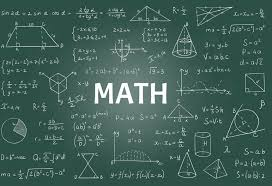

수학이란?
수학이란, 수, 양, 공간의 구조와 성질, 변화, 논리 등을 연구하는 학문입니다.
수학을 배워야 하는 이유
수학을 왜 배워야 할까요? 그 이유는 수학은 우리 실생활과 밀접하게 연관되어 있고 생활 속 문제를 해결하는데 많은 도움을 주기 때문입니다. 예를들어 어떤 물건을 지탱하는 받침대를 만들때 전자저울 없이 밀도와 부피로 무게를 알아내 튼튼한 받침대를 설계할 수 있습니다. 뿐만아니라 수학을 알면 다른 분야(과학 등)을 같이 응용해 책상 앞에서 지구의 지름과 둘레를 구하는 것도 가능해 집니다.